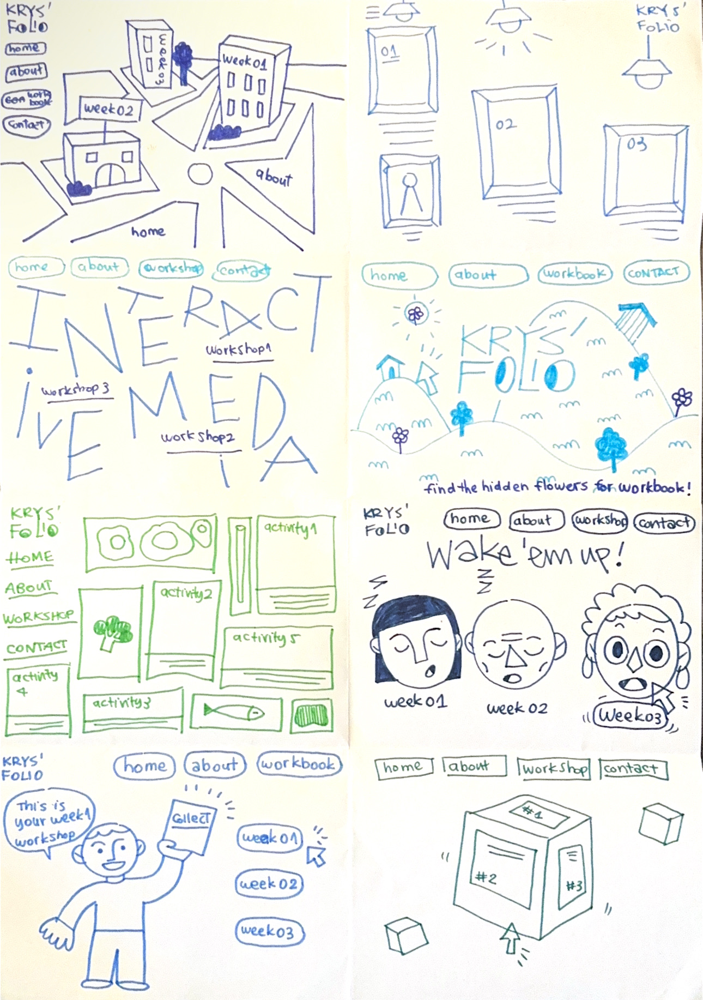

WEEKLY TAKEAWAY MENU
Week_02: HOT MEAL MENU
WHY HOT MEAL?
If WEEK_01 was the raw food, WEEK_02 is the HOT MEAL. This stage presents the transformation of raw HTML into an aesthetic experience through CSS and visual design. This reflects the heat and texture and flavour of ingredients being cooked, which easily satisfies the mass users' appetite.
THIS WEEK MENU

ACTIVITY_01_CRAZY_8S
The explanation order is from left to right, top to bottom:
- The website is a 3D interactive map of Melbourne city. During week_02 studio class, I discovered several interesting websites such as Peter Oravec's Portfolio website or Threejs. They adapt 3D modelling in interactive web design. On the map, there will be clickable buildings leading users to important pages.
- The homepage is designed as a gallery. The light pulps are inspired by the turn-on, turn-off light algorithm in Python. When the cursor is hover to the light, it will turn on and show the link to weekly journal.
- The background is a mouseover effects to change the background with INTERACTIVE MEDIA letters. For references, users can freely interact with background via ther cursor in Tomer Lerner's website
- The eyes in the logo follow cursor. Users' goal is to find the flower hidden in the mountain and click it to see the weekly journal's reward.
- This is an application of the bento grid layout. Different trays of important buttons and visual distractions are placed perfectly.
- A website that focus on character design. All of the character are sleepy and if we click them, they will get startle then drop the link to weekly journal.
- In this website, there will be different buttons. When you click a button, the character will accordingly do the action and give you the link to weekly journal.
- It is a 3D rubric with brief description and journal link on it. Users can freely rotate, drag and drop the cube,...

PAPER PROTOTYPE
This is the paper prototype I want to develop for workbook A. The logic of this website is like a game: 3 different characters require different items. User's goal is to find the item in the 3D wood. If you successfully collect enough items, you will receive a link to my weekly journal.